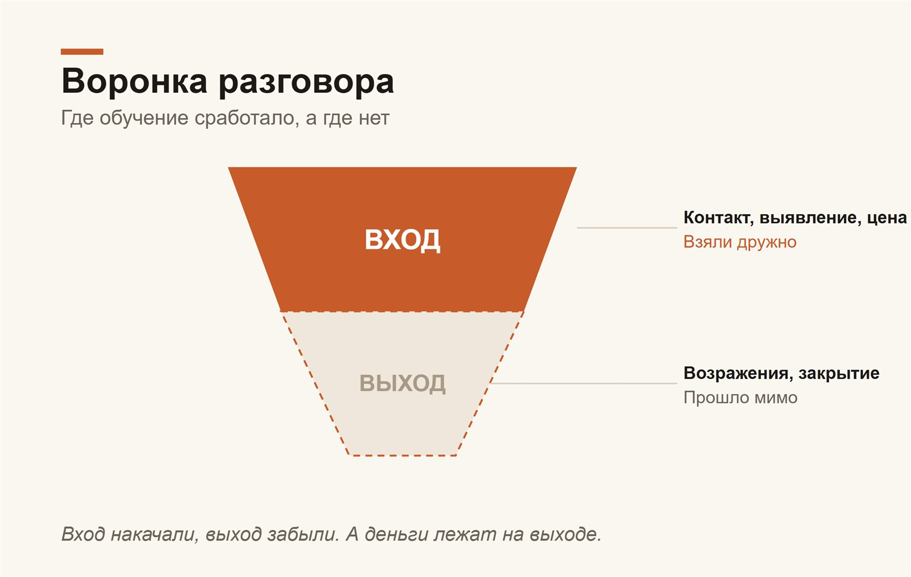
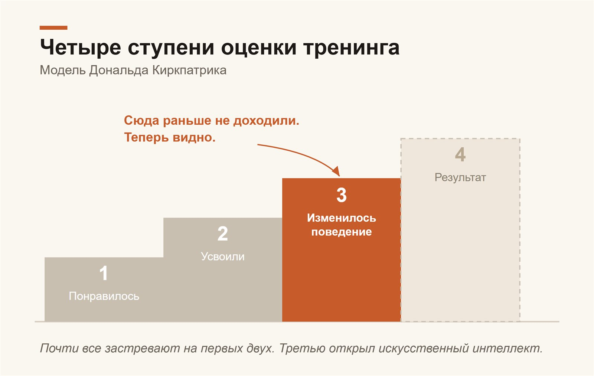

Большая история о том, как одна мебельная компания заказала тренинг для своих продавцов, а параллельно посадила искусственный интеллект слушать их разговоры с клиентами. И о том, что теперь, благодаря ИИ, любой собственник и любой тренер могут наконец увидеть то, что раньше было принципиально невидимым: что тренинг изменил на самом деле, а не на словах.
Данные иллюстративные. История реальная, с конкретного мебельного бизнеса, но обезличена: компания не названа, имена и узнаваемые детали изменены или заменены ролями, числа округлены и сдвинуты. Суть, пропорции и выводы сохранены.
Тренинг закончился, тренер ушёл. А наблюдатель остался.
Есть один вопрос, на который индустрия обучения продажам не умела честно отвечать почти сто лет. Звучит он просто: «Тренинг сработал или нет?» Не понравился ли он людям, не было ли весело, не поставили ли тренеру высокую оценку в анкете, а сработал ли. Изменилось ли хоть что-нибудь в том, как менеджер на следующей неделе берёт трубку и разговаривает с живым клиентом.
Обычно это меряют так. Тренер заканчивает, все хлопают, кто-то говорит душевное спасибо, собственник подписывает акт. Через неделю раздают анкету, в анкете галочки «было полезно». И всё. Дальше начинается вера. Кажется, что стали бодрее. Кажется, продажи чуть подросли, хотя, может, это сезон. Кажется, деньги потрачены не зря. На этом «кажется» держится весь рынок корпоративного обучения, и держится крепко, потому что проверить было нечем.
А в этой истории впервые оказалось чем. Пока тренер работал с менеджерами в переговорной, рядом тихо сидел наблюдатель, который не отвлекался ни на секунду, не уставал и не имел ни одного любимчика. Искусственный интеллект, которому отдали на прослушку все звонки отдела продаж. И то, что он показал, стоит рассказать подробно, потому что это не про одну фабрику. Это про то, что правила игры в обучении только что поменялись, и большинство об этом ещё не знает.
Для кого это и что вы унесёте
Статья для собственника, который хоть раз платил за тренинг и потом гадал, за что именно заплатил. Для руководителя продаж, которому этих тренеров водят показывать раз в полгода. И для самих тренеров, кстати, в первую очередь для хороших, потому что для них это не угроза, а наконец-то появившееся доказательство их работы.
Что вы возьмете себе из статьи. Что эффект обучения теперь можно увидеть глазами, а не нащупать интуицией. Что увидеть его можно и через неделю, и через месяц, и через год, и отдельно понять, что прижилось, а что красиво вспыхнуло и погасло. Что благодаря этому появляется куча новых возможностей, которыми грех не воспользоваться: снять честную картинку до обучения, сверить, что менеджеры о себе думают, с тем, что они реально делают, и точно знать, чему доучивать и кого. И, как обычно у меня, к финалу выяснится, что разговор вовсе не про искусственный интеллект и не про контроль, а про вещь куда более простую и человеческую.
Начнём с истории, ибо она того стоит.
Наблюдатель, у которого сначала были только звонки
Компания мебельная, продаёт кухни и корпусную мебель на заказ. Продают менеджеры-дизайнеры, те самые, что ведут клиента от первого входящего звонка до подписанного договора: выслушать, посчитать, позвать на замер, нарисовать проект, отбить возражения, дожать. Работа тонкая, на ней всё и держится. Руководство решило эту работу подтянуть и позвало внешнего тренера. Тренинг шёл несколько дней, двумя группами, с ролевыми играми и разбором реальных конкурентов. Живо, вовлечённо, людям нравилось.
А теперь самое интересное. У аналитика, который вёл наблюдение вместе с искусственным интеллектом, поначалу не было ни программы тренинга, ни его конспекта, ни даже толком списка участников. У него были только звонки и тысячи расшифрованных разговоров с клиентами, накопленных за пару месяцев, без единой дырки в днях. И задача: понять по этим разговорам, изменилось ли что-нибудь после обучения. Вслепую. Как если бы вы пытались восстановить, чему учили актёров на репетиции, ни разу на ней не побывав, а только пересматривая спектакли до и после.
Дальше история разворачивается в несколько ходов, и каждый следующий честнее предыдущего. Получился, если хотите, детектив, в котором следователь под конец разбирает и собственные ошибки.
Ход первый: снимок до и после, вслепую
Сначала ИИ взял по каждому менеджеру стопку разговоров до обучения и стопку после. Не выжимки, не куски, а сотни разговоров целиком, от первого слова до прощания, в сумме многие десятки часов чужой речи. Прочитал каждый. И стал сравнивать: какие слова, приёмы и ходы появились после тренинга и которых до него не было ни у кого.
Картинка проявилась быстро. След обучения в звонках был, и отчётливый: у большинства команды возникли новые приёмы, причём появились они дружно, синхронно, в одни и те же дни сразу у нескольких людей. Когда одна и та же фраза всплывает слово в слово у разных менеджеров на одной неделе, сомнений нет: её дали на тренинге как заготовку.
Самым массовым новичком оказался вопрос о бюджете клиента. До обучения большинство про деньги клиента стеснительно молчало и называло цену вслепую. После, почти у всех разом, появилось вежливое «в какой бюджет нам с вами нужно уложиться?». У кого-то этого вопроса не было вообще, ни разу, а стало почти в каждом разговоре. Вместе с ним подтянулась подача цены вилкой, от и до, и проверка реакции, «как вам по цене, комфортно?». Картина вышла убедительная, и первый отчёт честно её зафиксировал: учили спрашивать, выявлять, аккуратно подавать цену, и команда это взяла.
Так звучит приём, который реально прижился: уверенный вопрос вместо мямленья.
Ход второй: «дорого» и «дороже» это два разных слова
Дальше копнули в самое больное место любых продаж, в возражение по цене. И сразу развели то, что обычно валят в одну кучу. Потому что «дорого» и «дороже» это совершенно разные вещи, и лечатся они по-разному.
«Дорого» это про самого клиента. Ему дорого относительно своих денег или относительно того, что он вообще ждал увидеть. Тут либо правда не хватает суммы, либо человек не понимает, за что с него столько просят. А «дороже» это уже сравнение: у соседнего продавца дешевле. Тут клиент тычет вам в нос чужую цену. Первое лечится либо пересборкой заказа под бюджет, либо тем, что вы покажете, какую его задачу мебель закроет, и человек увидит ценность. Второе лечится только одним: спокойно разобрать, чем ваше предложение отличается от того, дешёвого, по составу и по делу.
ИИ прогнал через эту оптику многие сотни продающих звонков и выдал вывод, ради которого, на мой взгляд, всё и затевалось. Сформулировать его можно жёстко и коротко. Команду научили спрашивать. Не научили отвечать. Деньги теряются на ответе.
Смотрите, что вышло. Диагностический вопрос, тот самый про бюджет, после тренинга стал звучать заметно чаще, был у половины, стал у двух третей. Это бесспорно состоялось, но вот беда: сам по себе этот вопрос ничего не закрывает. Разговоры, где его задали, заканчивались сделкой не чаще, чем те, где не задали. Вопрос говорит менеджеру, с каким возражением он имеет дело, и на этом его сила кончается. Спросить это ещё не ответить.
А что реально удерживало клиента? Две вещи, и обе обучение почти не сдвинуло. На клиенте, который не видит, за что платить, обоснование ценности роняло отказы втрое: где менеджер молчал по существу, уходил почти каждый второй, где объяснял, чем мебель окупит свою цену, уходил один из пяти. А на возражении «у других дешевле» решал предметный разбор: когда менеджер конкретно разводил, что входит в ваши деньги и что в чужие, отказов было три на сотню. Когда отвечал общими словами про «у нас качество», уходил каждый пятый. Когда не отвечал ничего, уходил почти каждый второй. Так вот, предметно отвечать умел в лучшем случае один из пяти. Вход в разговор накачали, выход забыли. А деньги, как назло, лежат на выходе.
И тут же всплыла деталь, от которой у любого продавца должно потеплеть на душе. Почти все эти грозные сравнения с конкурентами оказались дутыми. Реальный расчёт от конкурента, с составом и цифрами, был на руках у клиента в одном случае из десяти. Всё остальное это «где-то видел дешевле», «года два назад считали», «у Николая вроде вышло меньше». А там, где можно было сверить, в девяти случаях из десяти сравнивали несравнимое: готовый модуль с кухней на заказ, плёнку с эмалью, «без монтажа» с «под ключ». То есть оружие против «дороже» лежало у менеджеров прямо под рукой. Достаточно было спросить, что входит в ту чужую цену, и сравнение рассыпалось само. Но спрашивать этому не научили.
«Дорого» и «дороже» это два разных разговора, и ответ на них тоже разный.
Ход третий: и вот тогда дали запись самого тренинга
Дальше наблюдателю наконец отдали то, чего у него не было: записи самого обучения. Записи всех его дней, несколько часов живого тренинга. Теперь стало видно не «что появилось в звонках после», а «чему именно учили». И тут можно было сделать две вещи, которые раньше были невозможны.
Первое: разобрать сам тренинг. ИИ вытащил из записей точный список приёмов, два десятка штук, разложил по этапам разговора, и заодно вынес отдельным списком то, чего на тренинге звучать не должно было. Потому что наряду с сильными, рабочими вещами тренер давал и опасные. Установку придумать отличия, которых нет, и «создать впечатление, что они есть». Заготовку обещать клиенту, что кухня «гарантированно простоит пятьдесят лет без нареканий». Приём поднажать «через месяц будет дороже на двадцать процентов, и не только у нас, а по всему рынку». Это не находки гения продаж, это прямая дорога к рекламациям, возвратам и репутационным дырам, а кое-где и к разговору с юристом. Хороший тренер, сильная подача, а в продукте на выходе мина.
Второе, и более ценное: сверить, что давали, с тем, что взяли. Не догадываться по следам, а положить рядом программу и реальные звонки и по каждому приёму, по каждому человеку поставить честный диагноз: применяет, появилось после тренинга, умел и раньше, не применяет.
И вот тут проявилась та же закономерность, только во весь рост. Чем ближе приём к началу разговора, тем дружнее его взяли. Поздороваться, перехватить инициативу, спросить, что клиенту важно, спросить бюджет, назвать вилку цены, всё это разлетелось по команде. Кстати, самым заученным оказался вовсе не вопрос о бюджете, а тихий вопрос «что для вас важно при выборе кухни?». Его подхватила добрая половина команды, почти дословно. А вот чем ближе приём к концу и к сопротивлению, тем реже его брали. Закрыть встречу на конкретные дату и время взяли единицы, а у одного приём вообще просел: до обучения он назначал замеры с точным днём и часом, после стал вяло отдавать запись администраторам. Тонкую работу с возражением не взял почти никто. Был, например, изящный приём вскрыть истинную причину за вежливым «посоветуюсь с мужем». Поводов применить его было море. Не применил ни один. Ровно ноль.
А теперь хорошая новость, ради которой стоило всё это слушать. Те самые опасные установки тренера команда в звонки не понесла. Никто не обещал клиентам пятьдесят лет без нареканий, не пугал выдуманным подорожанием по всему рынку, не сочинял несуществующих преимуществ. Люди оказались умнее и порядочнее части того, чему их учили, и взяли здоровое, а вредное тихо отфильтровали. Это, между прочим, тоже стало видно только потому, что кто-то прочитал все звонки.

Что команда взяла дружно (вход) и что прошло мимо (выход).
Ход четвёртый: работа над ошибками, которую ИИ проделал над собой
Здесь история могла бы закончиться, но не закончилась, и именно это делает её для меня по-настоящему ценной. Петлю надо было замкнуть. У наблюдателя на руках оказались разом и его прежние слепые догадки, и теперь уже точно известная правда о том, чему учили. И он сделал то, чего почти никто не делает добровольно: сел разбирать собственные ошибки.
Сверил свою слепую реконструкцию с настоящей программой и хладнокровно подвёл счёт: девять вещей угадал точно, пять пропустил, а в четырёх ошибся, приписав тренеру чужое.
Уроки из этого вышли отрезвляющие, и они полезны каждому, кто будет так измерять.
Первый урок: совпадение во времени это ещё не авторство. ИИ видел, что вопрос о бюджете появился сразу после тренинга, и записал его в главные заслуги тренера. А в записях обучения этого приёма не было вовсе. Бюджет, новые условия рассрочки, скидки за наличные пришли в отдел в те же дни, но из другого места, от руководства, и просто наложились по времени. «После» не значит «вследствие». Слепой метод эту разницу не ловит.
Второй урок горше: метод видит только то, что менеджеры применили. То, что им дали, но они не взяли, для него невидимо. Тот приём про «мужа как ширму», который не взял никто, в слепом анализе просто отсутствовал, как будто его и не было на тренинге. И, что куда опаснее, ровно так же невидимыми оказались те самые вредные установки. Раз команда их не повторяла, в звонках их не было, а значит, слепой метод не мог о них и предупредить. Зеркало показывает, что люди делают, и молчит о том, чего они делать не стали, даже если не стали с большим трудом.
Третий: яркое затмевает главное. Вопрос о бюджете заметный, его легко посчитать, ноль превратился в семь. И он влез на первое место. А тихий вопрос «что важно», который и был настоящим ядром тренинга, метод задвинул в второй ряд просто потому, что он не такой эффектный. Считаемое побеждает важное, если за этим не следить.
И четвёртый, светлый. При всех этих промахах одну вещь слепой метод поймал безупречно, ещё ничего не зная о программе. Ту самую: научили спрашивать, не научили отвечать, вход сдвинулся, выход нет. Эта закономерность видна в общей картине и не зависит от того, кто автор какого приёма. То есть в чём ИИ силён без всякой шпаргалки, так это в диагнозе «что изменилось и где теперь дыра». А в чём слаб, так это в «кто именно это дал». Для первого хватает звонков. Для второго нужен первоисточник.
Вот теперь петля замкнута. И из неё видно главное.
Лестница, на которой все застревают на первой ступеньке
Чтобы понять, насколько это меняет дело, нужна одна простая мысль, которую давно придумали умные люди, изучавшие обучение. Есть такой Дональд Киркпатрик, он ещё в прошлом веке разложил оценку любого тренинга на четыре ступени.
Ступень первая: понравилось ли. Реакция, настроение, та самая анкета с галочками. Ступень вторая: усвоили ли, можно ли это сдать на проверочном вопросе сразу после. Ступень третья: изменилось ли поведение на рабочем месте, делают ли люди что-то иначе через неделю, через месяц, когда тренера давно нет и никто не смотрит. И ступень четвёртая: сказалось ли это на деле, на деньгах, на конверсии.
Так вот, вся беда обучения в том, что почти все застревают на первой ступеньке, изредка дотягиваясь до второй. А третья, поведение, и есть та, ради которой всё затевалось, потому что если человек ничего не делает иначе, то и денег это не принесёт. Но третью почти никто не меряет. Знаете почему? Потому что это было дорого и мучительно. Чтобы честно увидеть, изменилось ли поведение, надо было сажать наблюдателя слушать сотни разговоров на протяжении месяцев. Никто этого не делал. Данные, которые важнее всего, собирали реже всего.
И вот ровно эту, самую дорогую и самую недостижимую ступень, искусственный интеллект только что сделал дешёвой и доступной. Прочитать сотню часов разговоров и сказать, кто что стал делать иначе, для него обычная работа. То, на что не хватало ни рук, ни денег, ни терпения, теперь делается тихо и постоянно. Это и есть перелом. Дальше просто разберём, что из этого следует на практике.

Четыре ступени оценки. Третью, поведение, раньше почти не мерили.
Картинка «до», без которой тренинг это стрельба по площадям
Первое, что теперь можно и нужно делать, это снимать честную картинку до обучения. И, на мой взгляд, это вообще обязательный шаг, без которого дальше можно не начинать.
Подумайте, как обычно заказывают тренинг. По ощущению. Кажется, что продают слабовато, зовут тренера «подтянуть продажи вообще». Тренер приезжает со своей стандартной программой и учит всех всему подряд. В итоге половину времени людям рассказывают то, что они и так умеют, а на их настоящую болячку времени не остаётся. В нашей истории, между прочим, ровно так и вышло: вход в разговор у команды и без того был неплох, а провал был на закрытии и возражениях, и именно туда тренинг почти не попал.
Теперь это лечится. До всякого тренера можно прочитать реальные звонки и получить карту: кто и как на самом деле разговаривает с клиентами по той теме, которой собираетесь учить. Где сильны, где слабы, какие ошибки повторяются у всех, а какие у одного. Кто из менеджеров уже умеет то, чему собираются учить остальных. Это, кстати, отдельное золото. В нашем кейсе выяснилось, что лучшие приёмы давно жили внутри компании, у нескольких сильных продавцов. Был, например, человек, что пришёл в команду уже с опытом работы у конкурента, и потому разбирал чужие предложения изнутри лучше любого тренера. Иногда правильный ход это не звать чужого, а снять и растиражировать своего эталона.
И вот ещё ход, который я особенно люблю. Перед обучением спросите самих менеджеров, как они, по их мнению, работают. Проведите короткий опрос: задаёте ли вопрос о бюджете, как отрабатываете «дорого», часто ли доводите до записи на замер. А потом положите их ответы рядом с тем, что показали реальные звонки. Разрыв между «я всегда выясняю потребность» и тем, что в трубке этого не слышно, и есть самый честный учебный план. Человек не врёт, он искренне себя таким видит. Просто раньше некому было показать ему запись. Тренер, который заходит с такой картой на руках, учит не вообще, а точно по живым дырам. Это другой тренинг и другой результат.
Картинка «после», которую снимают не раз, а всегда
Дальше начинается то, что было невозможно в принципе. Можно снимать картинку после. И не один раз для галочки, а регулярно, как врач снимает контрольные снимки.
Потому что у эффекта обучения есть подлая особенность: он живёт по-разному у разных приёмов и у разных людей. Что-то прижилось намертво и работает через месяц. Что-то ярко вспыхнуло в первую неделю, на адреналине новизны, и тихо угасло к концу месяца. В нашей истории это было видно прямо по календарю: у одних менеджеров новые приёмы держались и в позднем окне, у других сверкнули пару дней после тренинга и пропали, будто и не было. Раньше вы бы этого не различили никогда. И тот, кто на адреналине выдал красивую неделю, и тот, кто перестроился всерьёз, в вашей памяти остались бы одинаково «молодцами после тренинга».
А теперь снимок можно сделать через две недели, через месяц, через полгода, через год. И увидеть не общее «вроде стали лучше», а конкретно: этот приём врос и стал привычкой, этот осыпался, этот человек перестроился, а у этого всё вернулось на старые рельсы. Появляется история, динамика, а не одна замазанная точка. Вы наконец отвечаете на тот самый вопрос, с которого мы начали, и отвечаете не верой, а фактом.
Пост-тренинг: всплеск, который без подпорки осыпается
Из этого прямо вытекает вещь, которую большинство компаний пропускает, а зря. После тренинга почти всегда нужен пост-тренинг, дотренировка, закрепление. И теперь понятно не на пальцах, а с цифрами, почему.
Память человека устроена не в нашу пользу. Полвека назад в одной американской корпорации, той самой, что когда-то подарила миру копировальный аппарат, посчитали неприятную вещь: почти девять десятых того, что дают на тренинге по продажам, забывается за месяц. Не потому, что люди плохие, а потому, что так устроена голова. Любое знание без повторения утекает, как вода сквозь пальцы. Один заход тренера это всегда всплеск, за которым следует откат, и вопрос только в том, до какого уровня откатит.
И вот тут ИИ из измерителя превращается в инструмент управления. Он показывает не вообще «надо закрепить», а точно, что именно осыпается и у кого. В нашем кейсе и так было видно: вход держится, а закрытие на встречу проваливается у конкретных людей, которые отлично выявляют потребность, но в финале сливают клиента администратору. Вот вам готовое и точное задание на пост-тренинг: не гонять всю команду по новой через всю программу, а взять троих и одну тему, закрытие, и довести её до автоматизма на их же реальных звонках. Точечно, дёшево, по адресу. Это и есть разница между «провели тренинг» и «получили результат».
И отдельно ИИ работает страховкой. Он ловит не только то, что прижилось хорошего, но и то, что приживается опасного. Если вдруг кто-то из менеджеров подхватил у тренера ту самую установку про «пятьдесят лет гарантии» или начал поливать конкурентов, это всплывёт в звонках, и поправить можно будет до того, как прилетит претензия. Раньше такие вещи вскрывались только через скандал с клиентом.
Что со всем этим делать: коротко о самих тренингах
Раз уж зашёл разговор, соберу и общие выводы про обучение продавцов, благо эта история их хорошо подсвечивает.
Когда вообще звать тренера. Не по расписанию и не для галочки, а под измеренную, понятую проблему. Сначала картинка до, потом решение, нужен ли тут вообще тренинг, а не, скажем, переписанный скрипт или разбор звонков силами руководителя. Тренинг это дорогой инструмент, и стрелять им по площадям расточительно.
Какого тренера и подо что. Смотрите не на харизму и не на отзывы, а на то, что останется на выходе. В нашей истории содержание было сильным, подача живой, а продукт сырым: всё осталось на словах, ни одного зафиксированного скрипта, ни единой привязки к этапам сделки и к системе, где живут клиенты. Через пару недель половина ушла в песок просто потому, что её негде было закрепить. Хороший тренер оставляет после себя не воспоминание, а документ: вычищенные речёвки по этапам, банк ответов на реальные возражения, понятную связку с тем, как у вас ведётся сделка. И тренирует он самое трудное, возражения и закрытие, а не самое приятное, мотивационный монолог под аплодисменты.
И раз уж я раздаю советы про тренеров, честно скажу про себя, чтобы вы не приняли меня за того, кем я не являюсь. Сам я не тренер и тренером быть не умею. Рассказать, показать, зажечь идеей, выдать за пару часов столько мыслей, что голова пухнет, это пожалуйста, это я люблю и, говорят, умею. А вот поставить человеку навык, то есть, в моей грубоватой терминологии, отдрессировать, это не ко мне. Меня сам этот процесс откровенно бесит, и если я всё-таки берусь учить, на выходе получается не тренинг, а лекция: занятно, вдохновляюще и для выработки навыка почти бесполезно. Ко мне имеет смысл идти тем, кто умеет учиться сам, кому хватает идеи и направления. А кого надо вести за руку и повторять с ним одно и то же до автоматизма, тем нужен профессиональный тренер, который, в отличие от меня, получает от этой возни настоящее удовольствие. Это просто разные профессии, и беда, когда их путают: от консультанта не ждите поставленного навыка, а от тренера не ждите новых идей и прорывов, он про другое, про то, чтобы навык встал и держался. Как подбирать сам тип обучения и тип человека под задачу, тренера или консультанта, я разбирал отдельно, давным-давно, вот в этой старой статье.
И вот что приятно. Когда мы вместе с Бобиком, так я зову своего цифрового помощника, разглядываем эти звонки и видим, что после обучения люди и правда заговорили иначе, я радуюсь за тренера. Это его победа, не моя. Просто раньше её невозможно было предъявить, она растворялась в общем «вроде стало получше», а теперь её видно поимённо и по неделям. Так что вся эта история не про то, как машина ловит тренеров за руку. Скорее наоборот: хорошему тренеру она наконец-то даёт то, чего у него никогда не было, честное доказательство, что он сделал свою работу.
Что нежелательно и почему. Учить в вакууме, в отрыве от вашего процесса, бесполезно: навык повисает в воздухе и не управляется. Мерить эффект анкетой «понравилось» это обманывать себя, мы про это уже всё сказали. Давать манипулятивные приёмы опасно вдвойне: они и доверие клиента рушат, и компанию подставляют. Гонять всю команду по одной программе, не глядя, кто что уже умеет, значит тратить время сильных на скуку. И заходить разово, без закрепления, значит платить за всплеск, который вы сами же дадите осыпаться.
И сквозь всё это, главная мысль. Сильнее всего обучение работает не когда учат красивее, а когда точно знают, кого, чему и зачем. А чтобы знать точно, нужна та самая картинка, до и после, которую раньше взять было неоткуда, а теперь есть откуда.
Как этим пользоваться
- Сначала снимок, потом тренер. До всякого обучения прочитайте реальные звонки по теме и составьте карту сильных и слабых мест. Тренер должен заходить с этой картой, а не со своей универсальной программой.
- Сверьте самооценку с реальностью. Спросите менеджеров, как они работают, и положите ответы рядом со звонками. Разрыв между «я так делаю» и тем, что слышно в трубке, и есть ваш учебный план.
- Поищите эталон внутри. Часто лучшее уже живёт у одного-двух сильных продавцов. Иногда дешевле снять и растиражировать своего, чем звать чужого.
- Требуйте от тренинга артефакт. На выходе нужен документ: скрипты по этапам, банк возражений, привязка к вашему процессу. Не воспоминание, а рабочий стандарт.
- Снимайте картинку после регулярно. Через две недели, через месяц, через полгода. Отдельно смотрите, что прижилось, а что вспыхнуло и угасло.
- Планируйте пост-тренинг сразу. Один заход всегда осыпается. Дотренировывайте точечно, по тем людям и темам, которые показал замер, на их же реальных звонках.
- Держите ИИ и на страховке. Пусть ловит не только хорошее, но и опасное: выдуманные преимущества, неосторожные обещания, наезды на конкурентов. Поправить дешевле до претензии, чем после.
Итог: не про искусственный интеллект
История получилась эффектная, и легко решить, что она про умную машину, которая прочитала тысячу разговоров и поймала тренера за руку. Но это обёртка.
Искусственный интеллект здесь не герой. Он всего лишь снял повязку, которую индустрия обучения носила сто лет, и сделал видимым то, что всегда было на месте, просто в темноте. Что менеджеры взяли, а что отфильтровали. Что прижилось, а что было спектаклем одной недели. Где компания учила людей тому, что они и так умели, а настоящую болячку не трогала. Всё это происходило и раньше, в каждой компании, на каждом тренинге. Просто никто не смотрел.
А когда повязка снята, обнажается вопрос, который и есть настоящий. Не «провели ли мы тренинг», на него теперь легко ответить да. И даже не «изменилось ли поведение», на него ответит и машина. А вот этот: помогли ли мы конкретному человеку стать в своём деле сильнее. Потому что в финале всё сводится не к приёмам и не к процентам, а к тому, что один продавец после обучения научился слышать, какую тревогу клиент прячет за словом «дорого», а другой как сливал, так и сливает. И увидеть эту разницу важно не чтобы наказать второго, а чтобы успеть протянуть ему руку, пока он не махнул на себя сам.
Машина считает приёмы. Смотреть на человека за этими приёмами всё равно придётся вам. Только теперь, наконец, есть на что смотреть.
Не наказать, а вовремя протянуть руку.